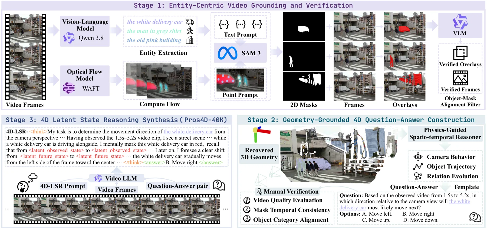
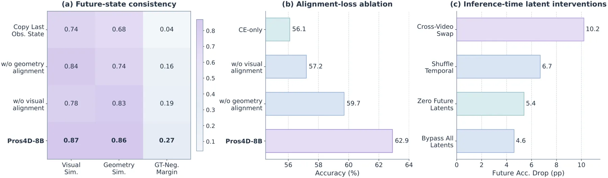
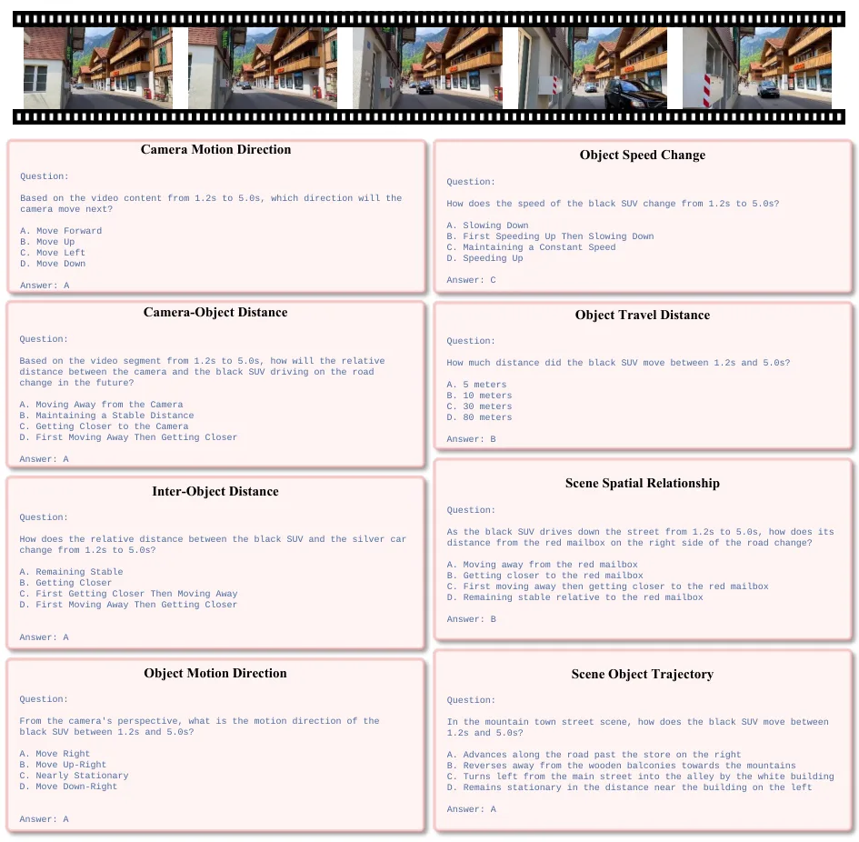
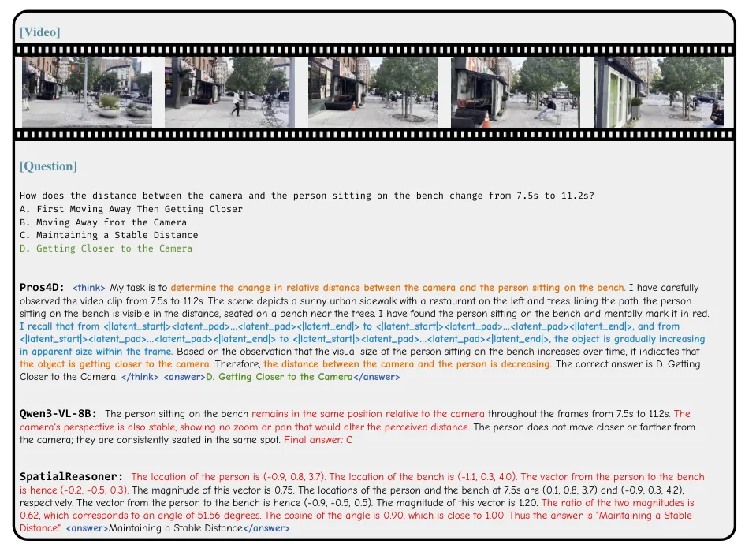
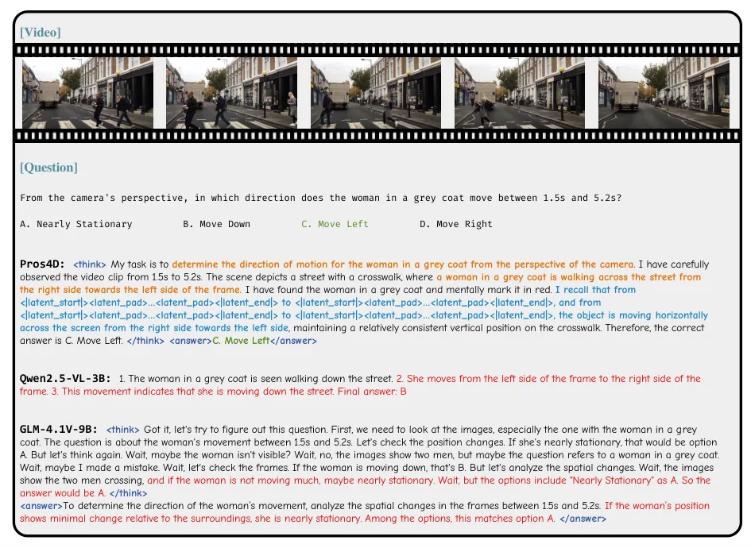

Pros4D：在隐空间里建模持续演化的 4D 世界，做动态空间推理
Pros4D: Modeling Evolving 4D Worlds in Latent Space for Dynamic Spatial Reasoning
一句话：它把“未来几秒的空间演化”压进一串被几何特征锚住的隐状态，从而让 VLM 不再靠外部工具做 4D 推理。对我们的直接价值不是它的问答分数，而是“用几何基础模型的特征去约束隐状态”这条监督路径——它等价于把几何先验注入学习表征，而不是在推理时外挂一个 BA 或深度模块。
Pros4D-Bench avg (8B)
Prospective accuracy (8B)
Latency at K=16
作者、单位与技术谱系 · Research context
作者与单位
研究脉络
- 4DThinker / MLLM-4D 一类几何增强的 4D 推理问题上游关系：这类工作把几何模块或工具调用接在 VLM 外面来做动态空间推理，本文的动机正是它们的两个代价：推理期依赖外部模块、文本化中间量会丢细节。[论文 §1 与 Table 1/2 基线]
- Pi3X 几何基础模型技术基座关系：冻结的 Pi3X 提供几何特征目标，4DLA 的几何对齐项直接以它的输出为监督，这是本文把“几何先验”注入语言模型的通道。[论文 §3.2 几何对齐]
- 本篇推进：观测态/未来态统一的自回归隐状态本篇推进关系：把“回顾理解”和“前瞻预测”压进同一套状态协议，只靠 τ∈{obs,fut} 区分角色，从而让同一前缀既能答题也能外推。[论文 §3.2 与 Table 7]
合作网络
- 五校共同署名XMU / CUMT / CUHK / THU / HIT → Pros4D关系：共同署名[论文 HTML 作者栏]
- Pi3X → Pros4DPi3X（几何基础模型） → 4DLA 几何对齐关系：技术依赖（冻结特征监督）[论文 §3.2 与训练配置表]
- DA3 → Pros4D-EngineDA3（单目几何） → Pros4D-Engine 标注关系：技术依赖（数据构造）[论文 §3.1 Geometry-grounded QA construction]
作者单位、角色标注与项目页来自论文 HTML 与官方项目页；五校与个人的对应关系原文未给出，文中不作推断。与 Pi3X、DA3 的关系是公开的技术依赖（模型被冻结使用），不是作者合作关系。
方法本质拆解 · What actually changed
是不是微调？
是在 Qwen3-VL-8B / Qwen2.5-VL-3B 上继续训练，但只改一小部分：视觉编码器与 Pi3X 几何编码器全部冻结，可训练的是 decoder、token embedding 和几何对齐头（alignment head）。训练数据是自建的 Pros4D-40K，单 epoch、BF16、AdamW，decoder 与 head 的学习率分别是 2e-6 与 1e-5，K=16。
有没有额外约束？
有两条硬约束。其一是结构约束：隐状态位置 t 的输入不是离散 token，而是上一时刻的隐状态 h_{t-1}，交叉熵只作用在文本 token 与边界 token 上。其二是几何约束：中间层隐状态经可训练头映射后，要与冻结 Pi3X 在对应叠加图上提取的几何特征对齐，损失同时约束方向（余弦）与幅值（数值与对数范数的 Smooth L1）。
推理/后端到底做了什么？
推理完全在 VLM 内部：输入只有观测视频前缀 Vobs 与问题，文本与隐状态按因果顺序交替生成，K 个连续位置之后恢复文本生成；不调用深度、点云、BA 或任何外部工具。评测用贪心解码、最多 1,024 个新位置，因此延迟主要来自隐状态 token 数（K=16 时 5.71 秒，K=36 时 12.46 秒）。
方法本质是什么？
本质是把“世界如何继续演化”从语言描述转移到一组有序、带几何锚点的隐向量上：观测态保存已见证据，未来态由自回归滚动产生，几何对齐保证这组向量不是任意特征而是与场景结构同构的表征。它没有做的是：没有显式重建 4D 几何、没有维护地图或位姿、也没有把预测结果回灌给任何优化后端，所以它给的是“可解释的预测”，不是“可用的几何状态”。
输入是观测视频前缀加问题，改变的位置是 decoder 中间层的隐状态（K=16 个连续向量），约束动作是视觉-语义与 Pi3X 几何双重对齐加上自回归滚动，直接效果是前瞻问题准确率从 40.7% 升到 59.5% 且推理期不需要外部几何工具。

桥接价值Bridge
桥接价值
这篇把“几何证据如何进入语言模型的内部状态”做成了一个可训练的接口：冻结的 Pi3X 几何编码器提供目标特征，可训练的 alignment head 把中间层隐状态映射到同一网格，损失用余弦距离加数值/对数范数的 Smooth L1。对我们做学习先验 + 几何优化的路线，这提供了一种“不改变推理期后端、只在训练期把表征拉向几何”的折中方案，可以用来解释为什么某些学习先验在退化场景里仍能保持尺度一致。第二个桥接点是它的评测切法：同一段观测前缀下，把问题分成“回顾”和“前瞻”两组，前瞻组不提供未来帧，于是任何提升都只能来自对演化的建模，而不是多看几帧。
方法与模块Method
方法摘要
数据侧：以 SpatialVID 原始视频为输入，边界 b 之前的帧作为观测前缀 Vobs、之后的帧只用于监督；实体掩码用 SAMA 系列的 SAM3 逐帧跟踪，几何用 DA3 恢复，八类问题的标签由确定性几何规则算出（例如场景关系用 d_t=||p_t - s_t||_2 区分靠近/远离），VLM 只负责把这些规则结果改写成自然语言。共得到 Pros4D-40K 训练集，评测集 Pros4D-Bench 含 3,000 题（观测 1,891、前瞻 1,109），按视频 ID 与训练集隔离。模型侧：每个隐状态是 K=16 个连续向量，包在 <|latent_start|>/<|latent_end|> 之间；4DLA 的总损失是 0.1·CE + 1.0·视觉对齐 + 0.5·几何对齐，双编码器全程冻结，只训 decoder、token embedding 和 alignment head，单 epoch、BF16，3B 版对齐到第 17 层、8B 版对齐到第 15 层。
可迁移模块
第一是可复用的“估计几何 → 生成监督”流水线：分割 + 单目深度 + 坐标系归一化就能为任意视频生成物体轨迹与关系标签，成本远低于人工标注，而且规则是确定性的、可复查。第二是隐状态监督的三个正交项（语言、视觉-语义、几何），可以把它们分别关掉看掉点，判断某个任务到底靠语言先验还是靠几何。第三是推理期干预实验（置零未来隐状态、打乱时序、换视频的状态），这套干预比只看准确率更能证明“状态里真的有东西”。

证据Evidence
关键证据与数字
Pros4D-Bench（Table 1）：Pros4D-8B 平均 62.9%，Qwen3-VL-8B 底座 46.4%；其中回顾 64.9、前瞻 59.5，底座分别是 49.7 与 40.7，即前瞻提升 18.8 个点。3B 版平均 62.0%，底座 Qwen2.5-VL-3B 为 45.4%。外部迁移（Table 2–4）：Dyn-Bench 65.6 对 61.0（+4.6）、VLM4D 66.0 对 58.1（+7.9，其中真实视频 +7.9、合成 +13.4）、R4D-Bench 43.5 对 40.3、STI-Bench 43.6 对 40.5。OpenX-VQA（Table 5）：Pros4D-3B 平均 51.39，底座 30.48（+20.91），其中“预测下一步动作”一项从 26.81 升到 79.41。
边界与下一步Limits & Next Step
边界与风险
监督标签来自估计几何：深度由 DA3 给出、掩码由 SAM3 传播，遮挡或反射面会让“物体质心—地标距离”这类标签本身带噪，论文没有报告几何误差对标签正确性的传导比例。作者明确承认的局限是几何估计质量与预测时域，未来工作才扩展到更长时域；实验里的前瞻只到观测边界之后的短片段，长时演化未被验证。另一个需要我们自己核验的点是它的对比公平性：baseline 都是零样本或工具链方法，而 Pros4D 在 40K 同分布数据上训练过，Pros4D-Bench 虽按视频隔离，但任务模板与训练集同源，跨模板泛化没有单独测。
下一步实验
第一步把它的几何对齐损失搬到我们自己的前端：用冻结的几何基础模型特征去约束一个轻量预测头，在同一段采集上比较“有/无几何对齐”对尺度漂移的影响。第二步做标签噪声敏感性实验：人为给深度加 5%/10% 扰动，看下游问答与轨迹误差如何变化，这能回答“用估计几何造监督”能容忍多差的几何。第三步把“隐状态 vs 显式几何后端”并排：同一段视频，一边用 Pros4D 式隐状态预测，一边用滑窗 BA + 简单运动模型，比较延迟与长时漂移，明确学习表征该在链路里占哪一格。







